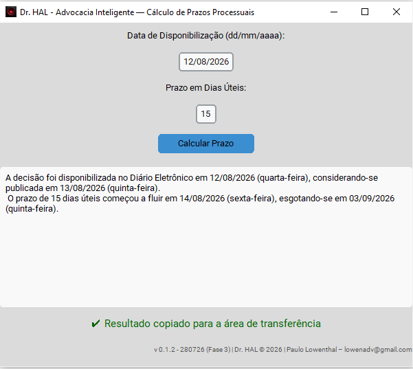

Simplifique o cálculo dos seus prazos processuais
Dr. HAL é um programa que calcula seus prazos processuais, já preparando o texto da tempestividade para você.
Depois basta inserir o resultado na petição com Ctrl+V.
Simples, rápido e confiável.
Versão disponível: 0.1.2 • Windows

Como funciona
Informe a data da disponibilização e o número de dias úteis do prazo. O Dr. HAL realiza a contagem e apresenta o resultado de forma pronta para utilização.
Informe os dados
Digite a data de disponibilização no Diário da Justiça eletrônico e o número de dias úteis correspondente ao prazo.
Calcule o prazo
O programa identifica a publicação, o início da contagem e o termo final, considerando os períodos contemplados em sua base de feriados e suspensões.
Cole na petição
O detalhamento do cálculo é copiado automaticamente para a área de transferência, podendo ser inserido diretamente no documento.
Do cálculo diretamente para a petição.
O Dr. HAL não se limita a indicar a data de vencimento. Ao concluir o cálculo, o programa copia automaticamente para a área de transferência um texto com o detalhamento da contagem.
Basta utilizar Ctrl + V no Word para incorporar o texto à petição, facilitando a elaboração dos tópicos destinados à demonstração da tempestividade do ato processual.
O prazo de 15 dias úteis começou a fluir em 14/08/2026 (sexta-feira), esgotando-se em 03/09/2026 (quinta-feira).
Base de feriados e suspensões de 2026
A versão atualmente disponibilizada foi desenvolvida inicialmente para cálculos relacionados à Capital do Estado de São Paulo.
A base atual considera os feriados e as suspensões de expediente previstos para a Capital do Estado de São Paulo, no ano de 2026, conforme divulgado no Provimento nº 2.813/2025 do Conselho Superior da Magistratura.
O desenvolvimento do projeto prevê, futuramente, a incorporação de feriados de outros municípios, além dos calendários e atos normativos de outros tribunais.
Quer acompanhar a evolução do Dr. HAL?
O programa continuará sendo desenvolvido, com ampliação da base de calendários e aperfeiçoamento de suas funcionalidades.
Se você utiliza o Dr. HAL e tem interesse em receber informações sobre futuras versões e atualizações, registre seu e-mail.
Tenho interesse nas próximas versões